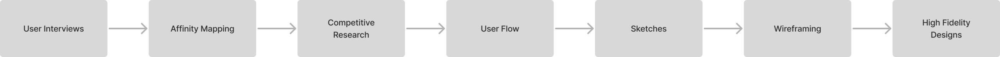
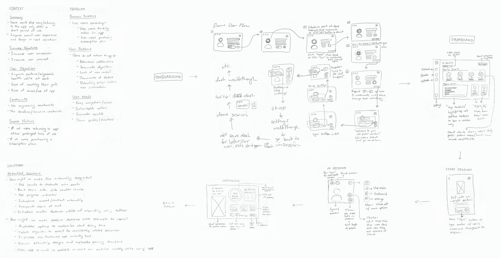

Zen's goal is to help you improve your posture and how to better your ergonomic health by providing virtual posture coaching sessions, habit reminders, and an array of media and content to feed your mind.
Scroll down to view more.
UX/UI Design, Wireframing, Competitive Analysis, Behavioral Research, User Interviews, User Flow Mapping
Jan - March 2021

At the start of the COVID-19 pandemic, Zen was a solution presented to remote workers who were looking for ways to improve their at home set-up and ergonomics.
While Zen received generally positive reception, their data showed that user conversion was relatively low. After about a week of using the app, more than half their users would stop returning to the app as frequently, or stop entirely.
Zen sought to explore more ways to connect to their audience and their needs. Based on the user data, two main goals were devised:
We will measure the percentage of regularly returning users. A regular returning user would use Zen at least 3 times a week.
For this project, I worked on a small team. Zen is a startup company, so I worked directly with each team member.
We broke the process into multiple components to throughly investigate areas of improvement for Zen. I based my suggestions off of my own research of best practices from the Nielsen Norman Group.
Prior to joining the team, Zen had just pushed out a large update and user interviews had already begun. After familiarizing with the app and its user reception at a high level, I participated in the remaining set of remote user interviews to gain a better understanding.
What did we ask?
To narrow our focus on user pain points, I created an affinity map based on our users' answers from the interviews. Their answers became our qualitative data points. Then I organized the answers into groups and summarized them based on similarity.
We were able to pinpoint:
Gathering user answers

Sorting answers into groups based on similarity
To find opportunities of improvement and identify successful design strategies used by Zen's competitors, I conducted competitive research on direct competitors (posture correction applications), mobile fitness apps, and productivity apps with well-known onboarding systems.
Zen's two competitors were Upright and Brightday.
Both posture correction apps have separate screens for when a user begins a posture session, similar to what Zen currently has.
However, both Upright and Brightday employ simple, but clear prompts to guide the user during their session. Thus, effectively removing any barriers of confusion.
Additionally, Upright uses bright visuals and a avatar character named Avi to further illustrate such guidance.
Clear messaging and visuals within the start session and in session screens
(left to right: Upright, Brightday)
Common patterns from fitness apps, like Nike Training Club, Apple Fitness, and Orange Theory were referenced to create our posture session certiticate, education center, and activation center.
The most reoccuring patterns were:
These strategies successfully created an gamified experience that is curated to the user and their target goals. This was done while keeping their designs minimal but clear.
Personalized, informative, and with clear visual hierarchy
(from top to bottom, the left to right: Nike Training Club, Apple Fitness, Orange Theory)
To redesign Zen's onboarding process, we referenced well-known strategies used by Headspace, Duolingo, and Slack in their onboarding experiences.
The most reoccuring patterns were:
These methods are important because they create an onboarding experience that is engaging and easy to follow. Users feel more inclined to finish the entire process becasue there are interactive and visually appealing components that continuously grab their attention while being easy to understand.
Interactive onboardings with simple but engaging visuals
(from each column of images, top to bottom: Headspace, Duolingo, Slack)
I created the new user flows for both the in app experience and the entire onboarding process. Since the redesign would include some new screens and steps, we needed to adjust the current structure.
The most impactful change was the onboarding process. We broke down the process itself into three parts:
Main onboarding flow that begins with user motivations
Break scheduling flow
Based on all our research findings, we determined four main user archetypes. These archetypes centered around our users' motivations for using Zen. We based them off of our user interviews and affinity mapping. The onboarding process would start with users picking these target goals and then the process would deviate based on those motivations, allowing them to personalize the features within Zen.
Users would then encounter a new section on scheduling breaks. Zen can alert users to take periodic walk or exercise breaks from their desk. The scheduling flow allows users to pick between automated or customized notification times.
We added a demo section to the end of the onboarding to walk users through Zen's main feature: posture sessions. The demo would be interactive and use tool tips to pinpoint important functions. This allows users to experience the app's value as soon as possible.
After consolidating our research and tests, we were finally able to define the main features and functionalities of the app. I first sketched out the solutions we determined. Then I presented them as low-fidelity wireframes. Using the wireframes, we were able to gather crucial feedback to better inform the decisions we will make for the final iteration of the experience and later, our prototype.
My sketches: defining the problem and possible solutions (left), beginning sketches for the screens

Wireframes - presented in the form of an expanded user flow, which was later used to create an early prototype
Following the finalization of the functionalities and features of Zen, I completed the high-fidelity designs using Zen's existing design system.
Kicking it off, we have the onboarding process. Taking inspiration from our competitors, our illustrator created our avatar and mascot, Zen. I suggested we incorporate Zen into the onboarding process to really emphasize his prescence and allow users to become familiar with him before starting a posture session with him. By providing visual guidance, I determined Zen’s behavior for each of the onboarding steps/slides. I broke down the onboarding process into bite-sized steps and short information slides, allowing Zen to walk the user thorugh each step of the way.
In doing so, we are able to maintain user engagement while teaching them about posture and ergonomics, while emphasizing the features they can personalize, alleviating one of our pain points: lack of awareness of existing customizable options. By also including a demo at the end, users are able to experience the app as soon as possible, allowing them to see the value that Zen can provide.

Onboarding screens
I designed the dashboard with a new grid layout. Previously, there was no categorization of their date. This separates the users' accumulated progress, their daily goals, and posture tendency tracker better.
I also made the date filters clearer by moving it below the main CTA and labeling them by automated intervals.
I also included options on the users' daily trackers to allow them to update posture and break sessions. This gave users quick access customizing their schedule.
On the sidebar, I also added text below each menu item icon to give users a clear idea of where each menu item will take them.
All of these changes help to solve the users' pains of difficult navigation.
Dashboard
When a user is ready to begin a session, they will be brought to the Start Session screen. Zen will then prompt them to get into an upright position to get ready. When they are ready, they will “sync” with Zen so that the friendly avatar can track their posture throughout the session.
To keep this screen as simple as possible, I updated the layout to only include an animation, a short description to prompt the user, and a primary CTA. I also designed message screens that would provide users with direction in the event of an unsuccessful sync.
These changes also help to resolve the issue of difficult navigation.
From left to right: Main Start Session screen, Sync Unsuccessful alert, User Not Found on Camera alert, Sync Successful alert
After syncing, users will be presented with a new and smaller screen. I designed this screen to be compact, but still provide users with the functions they would need during a session. I did so by using icons as buttons. The buttons are also grouped by functionality and will display tool tips on hover to provide context.
By taking up very little space on the user's screen, the app allows users to focus with their work while Zen tracks their posture. This helps to alleviate the issues users had with the app's design being distracting.
From left to right: Informative tool tips, customizable options, and posture alerts
When a user slouches, the alerts will be short, but animated within this screen to still notify the user while removing the need for distracting alert notifications. I determined how this animation would perform by providing visual instruction.
I also included the Alert option on this screen to allow users to customize the frequency of their alerts to reduce user frustrations about the high volume of notifications. Thus, emphasizing the user ability to customize their experience and resolve one of the key pain points we discovered during our research.
You've made it! After completing a posture session, users will see a new certificate screen. Similar to their dashboard, it will break down their progress, but showing data specifically from their completed session.
Previously there was not a certificate that greeted the user at the end of their session. It was a general summary screen, but this new design is another gamification element we added to increase user engagement and retention.
I added Zen's speech bubble and Top Tendencies breakdown chart to provide the users with more insight on their behavior, the day streak indicator as a form of motivation, and short statistics with icons to give users a brief overview.
Lastly, we included two new content libraries. The Education Center is focused on teaching about ergonomics and posture health. The Activation Center is focused on providing users with exercise videos to help them aleviate physical pain points.
I designed these screens with clear categorization based on content type and prioritized recommended content to the top of the screen. This does not only extend the personalized experience we are presenting to our users, but providing more value to users through Zen.
This helps to resolve the issue of lack of user control over customizations. These changes would also encourage them to return to the app more frequently and work towards increasing user retention.
We released this iteration of Zen to a pool of users from a company that offered to present Zen as a company benefit to their employees. From the company size, we expected the number of employees to sign up for Zen to be around the same as the number of users that our data was taken from.
After 3 weeks of observing, we discovered that over 80% of those employees returned to Zen at least 3 times a week after signing up. This was a 77% increase in user retention. This success metric proved that users were able to more clearly see the value that Zen brought to their remote working experience.
As the sole designer on the team, I learned a lot about analyzing qualitative data and making design decisions based on my findings. I found myself using the app frequently to really understand what our users were experiencing and learning to create solutions from not only a design perspective, but also as a user.